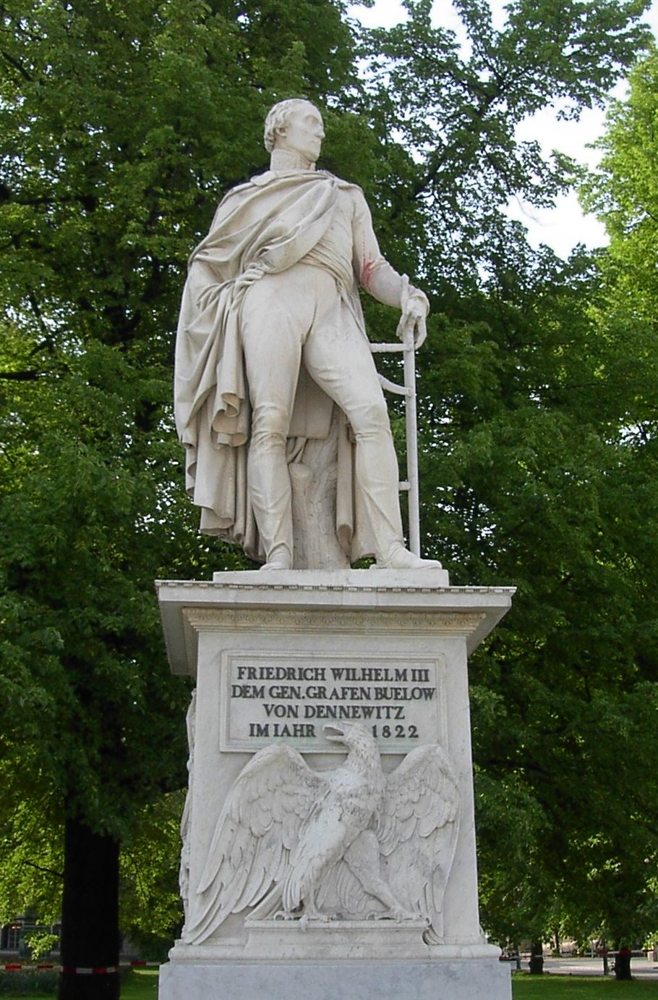
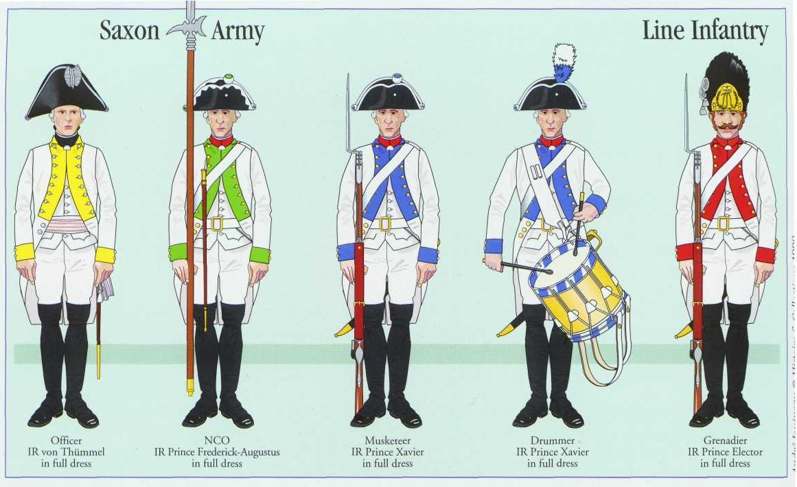
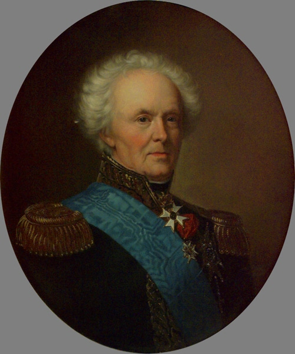
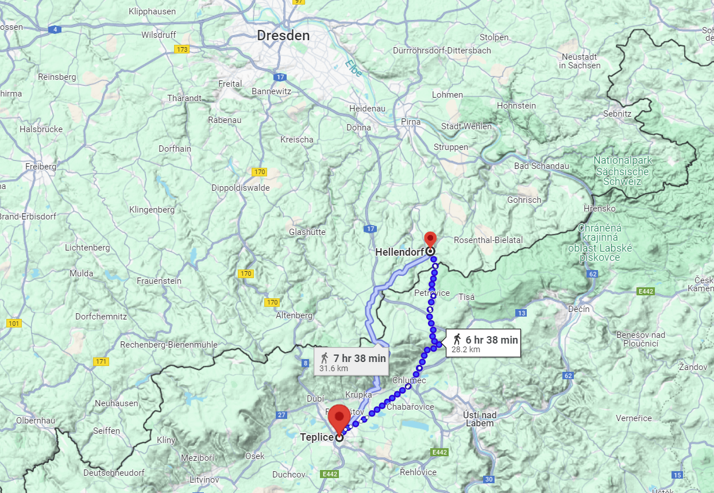

라이프치히로 가는 길 (2) - 왕세자에 대한 고자질
게시: 2024-11-04T06:30:26+09:00
블뤼허는 베르나도트가 9월 6일 덴너비츠에서 네를 격파했다는 소식을 듣고 너무나 기뻤습니다만, 곧 이어 별도로 날아든 뷜로(Friedrich Wilhelm Freiherr von Bülow)의 편지를 읽고는 무척 복잡한 심경이 되었습니다. 뷜로는 베르나도트 밑에서 북부 방면군 산하 프로이센 제3군단을 맡고 있었는데, 그는 베르나도트를 전혀 신뢰하지 않았을 뿐만 아니라 옛 적군인 그에 대해 깊은 적대감을 가지고 있었으므로 같은 프로이센 사람인 블뤼허에게는 별도의 편지를 보내 '베르나도트를 믿지 말라'고 경고했던 것입니다. 이 편지에서, 뷜로는 덴너비츠에서 열심히 싸운 것은 자신과 타우엔치언이 지휘하는 프로이센군 제3,4군단 뿐이었으며, 베르나도트는 온갖 핑계를 대며 진격을 미루다 승부가 판가름난 이후인 막판에 나타났을 뿐이라고 사실 그대로를 고자질했습니다. 베르나도트가 프로이센 2개 군단만 전투에 투입하고 나머지 군단들은 끝까지 참전을 미룬 것에 대해 북부 방면군 소속 러시아군은 물론 베르나도트 직속의 스웨덴 군단까지도 무척 의아해하고 분통스럽게 생각한다는 소식도 뷜로는 함께 전했습니다. 그런 사소한 고자질로는 모자라, 뷜로는 그로스베어런 전투 및 덴너비츠 전투에서의 베르나도트의 행동에 대해 이렇게 대놓고 평가했습니다. "요즘 원수(뷜로는 베르나도트를 다른 사람들처럼 스웨덴 왕세자라고 부르지 않고 사석에서는 프랑스군 원수라고 불렀습니다)의 작전 처리를 보면, 그자는 프랑스군의 동포로서가 아니라, 아예 프랑스군의 친구로서 처신하는 것이 분명하오."

(베를린에 있는 뷜로의 동상입니다. 1813년 당시 58세였던 뷜로는 젊어서 음악에 조예가 깊었고 그로 인해 베를린 사교계에서도 유명했으며, 심지어 그 음악적 재능으로 프리드리히 대왕에게까지 알려질 정도였습니다. 그러나 나폴레옹이 프로이센에 쳐들어오던 무렵인 1806~7년, 그는 개인적으로 불행의 시궁창에서 허우적거리고 있었습니다. 아끼던 친동생 디트리히(Dietrich Heinrich von Bülow)는 거액의 빚을 지며 문필가로서 프로이센 왕국을 비판하는 글을 쓰다 당국에 의해 투옥되었고 결국 1807년 러시아 감옥에서 사망했습니다. 1806년에는 두 자식을 잇달아 잃은 것도 부족하여 와이프마저 병사했는데, 곧 이어 벌어진 제4차 대불전쟁에서는 전투 부대에서 제외되는 치욕까지 겪었고, 조국은 패전의 수렁에 빠졌습니다. 그는 1808년 와이프의 여동생과 재혼했는데, 그런 것을 보면 우리나라와는 결혼 관련 상식이 매우 다른 것 같습니다. 프로이센에 대한 애국심이 다소 지나칠 정도의 애국주의자였던 그는 그 열정이 다소 과해 블뤼허와는 개인적으로 사이가 별로 좋지 않았다고 합니다.) 이건 물론 프랑스 출신의 베르나도트에 대한 뷜로의 깊은 불신에서 나오는, 모함에 가까운 비난이었습니다. 하지만 확실히 베르나도트의 지휘는 지나치게 소극적이고 안일했습니다. 혹자는 베르나도트의 이런 거동이 그랑다르메 소속 바이에른군이나 작센군 등 독일 출신 병사들의 반란을 유도하기 위함이며, 실제로도 슈바르첸베르크나 블뤼허보다 베르나도트의 북부 방면군이 이루어낸 성과가 나폴레옹을 훨씬 더 난처하게 만들었다고 말합니다. 가령 베르나도트가 파견한 러시아 기병대가 깊숙히 후방까지 침투하여 베스트팔렌의 수도 카셀을 점령한 사건은 바이에른의 연합군 가담을 확실하게 못박는 역할을 수행해냈습니다. 이 모든 것은 오랫동안 북부 독일에서 활약하여 독일군을 잘 이해하고 있을 뿐만 아니라 1809년 바그람 전투에서 나폴레옹이 의도적으로 작센군을 미끼로 삼았음에도 그 지휘관이었던 베르나도트는 작센군 병사들을 잘 다독거려 작센군 사이에서 인기가 좋았기에 가능했던 것이었습니다.

(위 그림은 당시 작센 전열 보병들의 군복입니다. 1809년 바그람 전투는 베르나도트의 지휘를 받던 작센군에게는 매우 불쾌했던 기억이었습니다. 바그람 전투 직전 벌어진 초반 야간 전투에서, 때마침 오스트리아군과 작센군이 모두 흰색 군복을 입었기 때문에 프랑스군의 오인 포격을 받아 작센군은 큰 피해를 입었습니다. 게다가 베르나도트를 의도적으로 물 먹이려 하던 나폴레옹이 가장 위험한 구역에 작센군을 배치하여 오스트리아군의 공격을 유도했고, 덕분에 작센군은 오합지졸처럼 패주해야 했습니다. 그런 상황에서도 베르나도트는 다소 뻔뻔스럽게도 자신과 작센군이 용감히 싸운 덕분에 바그람 전투에서 승리할 수 있었다며 나폴레옹과는 별도로 공식 성명서를 발표했고, 덕분에 나폴레옹의 분노를 샀습니다. 그러나 그 성명서는 작센군의 체면을 크게 살려준 셈이 되었고 그래서 작센군은 베르나도트에 대해 언제나 호의적이었다고 합니다.) 그러나 대부분의 역사적 평가는 베르나도트의 이런 소극적 작전이 어디까지나 나폴레옹을 지나치게 두려워 했기 때문이라는 것이긴 합니다. 가장 나쁜 점은 베르나도트가 휘하 프로이센군이 죽을 힘을 다해 이루어낸 그로스베어런 전투 및 덴너비츠 전투의 성과를 전혀 활용하고 있지 않다는 것이었습니다. 두 전투 모두에서, 패주하는 그랑다르메를 추격하여 전과를 확대하려는 뷜로와 타우엔치언에게 베르나도트는 '다 이긴 전투 막판에 적군에게 반격의 실마리를 주어서는 안된다'면서 추격을 금지시켰습니다. 베르나도트에 의해 항상 그랑다르메와 멀리 떨어진 곳에 배치되는 바람에 공을 세울 기회를 번번히 놓쳤던 러시아군 빈칭게로더 장군은 물론, 심지어 베르나도트 직속이던 스웨덴군 지휘관 슈테딩크(Curt Bogislaus Ludvig Kristoffer von Stedingk)조차도 베르나도트를 이제는 사기꾼으로 평가하고 있었습니다. 어떻게 보면 베르나도트를 '딴 마음을 품은 잠재적 배신자'로 보았던 뷜로의 평가가 오히려 더 후한 것인 셈입니다. 군인에게 있어 겁장이라는 것처럼 험한 욕이 없으니까요.

(스웨덴 장군 슈테딩크입니다. 그는 1813년 당시 67세의 노장으로서, 7년 전쟁 때 꼬마 소위로 군복무를 시작했었습니다. 그는 스웨덴 귀족 페르센(Axel von Fersen)과 친구이기도 했는데, 다만 그 페르센은 일본 만화 '베르사이유의 장미'로 유명한 스웨덴의 꽃미남 외교관 페르센이 아니라 바로 그의 아버지였습니다. 그는 프랑스군의 일원으로 미국 독립전쟁에도 참전했었지만, 주로 외교관으로 활동했습니다.) 결국 블뤼허는 베르나도트를 혼자 내버려둔다면 북부 방면군은 정말 아무 것도 하지 않고 베를린 근처에서 얼쩡거리기만 할 뿐이라고 생각했습니다. 아마 실제로도 그랬을 것입니다. 그러니 자신의 슐레지엔 방면군이 북부 방면군 옆에 바싹 붙어서 베르나도트의 멱살을 쥐고 함께 나폴레옹에게 진격하도록 강요해야 했습니다. 블뤼허는 즉각 베르나도트에게 편지를 보내 덴너비츠 전투에 대해 빛나는 승리라고 공치사를 하며 자신이 북서쪽으로 이동하여 토르가우 근처로 갈 것이니, 함께 엘베강을 건너 나폴레옹을 치자고 제안했습니다. 그런 상황에서 슈바르첸베르크와 알렉산드르가 연이어 편지를 보내 당장 보헤미아로 달려오라고 하니 블뤼허에게는 답답한 노릇이었습니다. 여러 국가의 군대가 모인 연합군 간의 의사소통은 원래가 매우 미묘한 일입니다. 더군다나 3개 방면군 중 1개군의 총지휘관이자 사실상 스웨덴의 왕이나 다름 없었던 베르나도트가 겁장이에 사기꾼이라고 편지로 써서 전달하는 것은 매우 위험한 일이었습니다. 그래서 블뤼허도 차마 베르나도트에 대한 원색적 표현은 쓰지 못하고 이리저리 변죽만 울리는 군사 에세이 같은 장문의 편지만 써서 보헤미아로 보냈던 것입니다. 그걸로는 역시 완전한 의사소통이 어려웠으므로, 심복인 륄 소령을 보내 알렉산드르를 직접 만나 구두로 베르나도트에 대한 상황을 알리게 된 것입니다. 물론 륄 소령도 감히 러시아 짜르 앞에서 '베르나도트는 겁장이 사기꾼'이라는 소리를 대놓고 할 수는 없었고 무척이나 빙빙 돌려가며 완곡히 설명을 해야 했는데, 알렉산드르도 그 이야기를 듣고는 상황을 완벽하게 파악했습니다. 결국 알렉산드르는 블뤼허의 군대를 보헤미아로 소환하는 것을 정식으로 취소했는데, 그 이유가 베르나도트에 대한 명예에 관한 것이다 보니 그 명령 취소에 대해 보헤미아 방면군 총사령관 슈바르첸베르크에게는 제대로 설명하지 못했습니다. 이러면서 알렉산드르와 오스트리아인들 사이에도 간극이 생기게 되었습니다. 이렇게 연합군의 합동 작전은 어려운 것입니다. 이렇게 블뤼허의 슐레지엔 방면군이 보헤미아로 와서 합류하지 않게 되었음에도 불구하고 보헤미아 방면군이 켐니츠로 진격하여 나폴레옹으로 하여금 엘베강 전선을 포기하고 물러나게 만든다는 계획은 예정대로 진행되었습니다. 나폴레옹이 9월 11일 테플리츠 코 앞까지 왔다가 싸우지도 않고 물러난 것에 대해 의아하게 생각한 연합군이 혹시나 싶어 보헤미아에 남아있는 그랑다르메 후위대에게 공격을 가해보니, 크게 저항하지도 않고 우르르 무너져 얼츠거비어거 산맥을 넘어 헬렌도르프(Hellendorf)까지 버리고 후퇴해버렸기 때문이었습니다. 그랑다르메가 이렇게 맥없이 후퇴한다는 것은 어쩌면 나폴레옹이 이미 라이프치히로 후퇴하고 있거나, 곧 후퇴할 것 같다고 판단한 슈바르첸베르크는 굳이 베니히센의 폴란드 방면군이 증원되기를 기다리지 않고 그냥 밀어붙여도 될 것 같다는 생각했던 것입니다. 슈바르첸베르크의 이 착각은 의도치 않게 베르나도트를 구해내는 결과를 낳습니다.

(헬렌도르프는 쿨름 전투 때도 나왔던 작은 마을로서, 보헤미아가 아니라 얼츠거비어거 산맥 북쪽의 작센 땅입니다.) Source : The Life of Napoleon Bonaparte, by William Milligan Sloane Napoleon and the Struggle for Germany, by Leggiere, Michael V With Napoleon's Guns by Colonel Jean-Nicolas-Auguste Noël https://en.wikipedia.org/wiki/Friedrich_Wilhelm_Freiherr_von_B%C3%BClow https://en.wikipedia.org/wiki/Curt_von_Stedingk